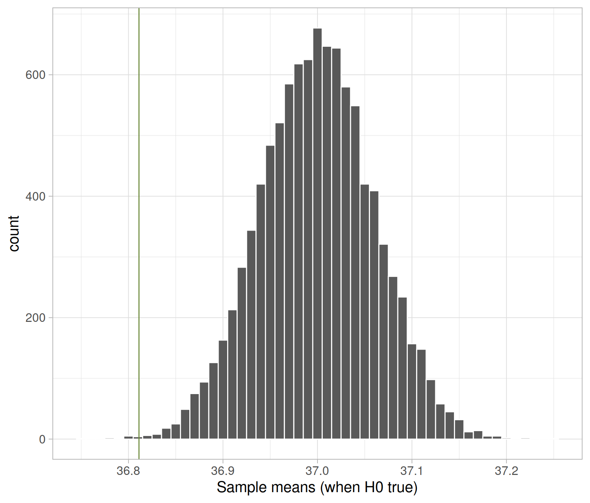
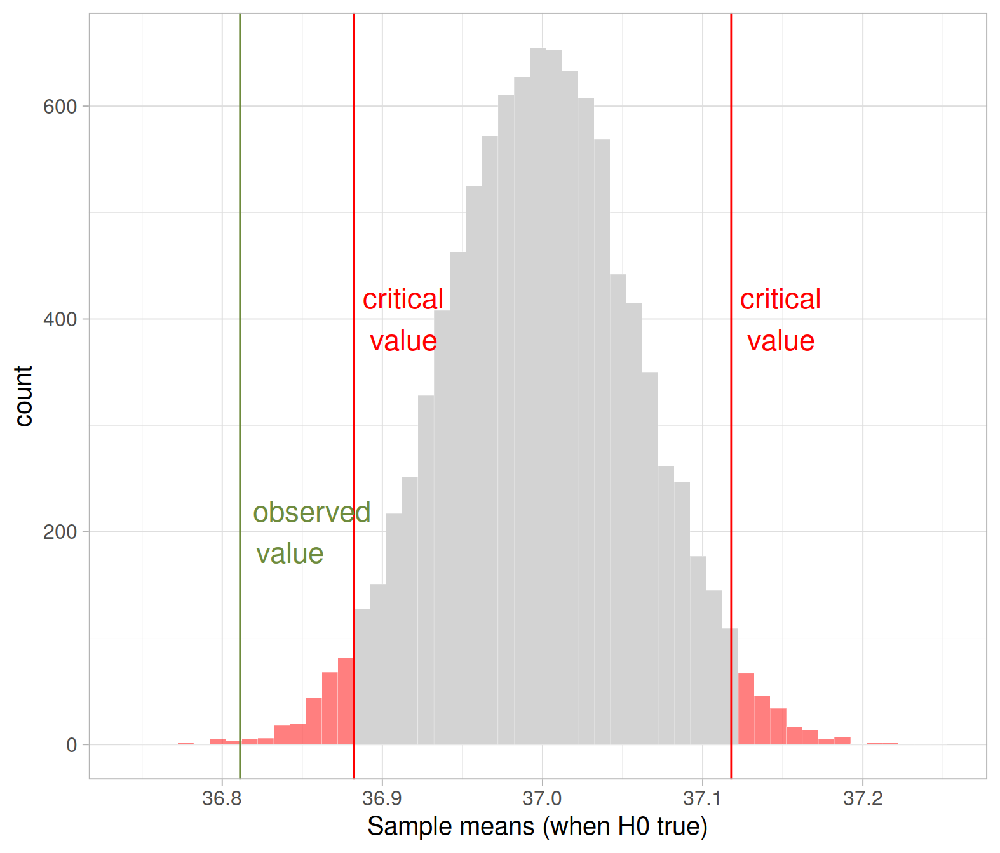
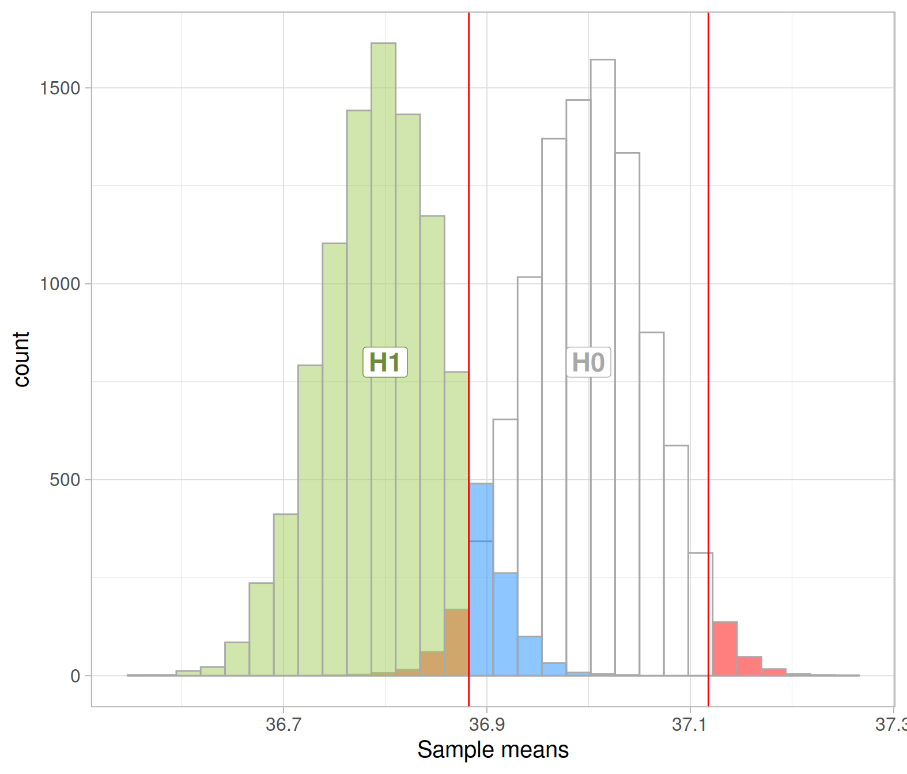

Has the average body temperature for healthy humans changed from the long-thought 37 °C?
In today’s lab we will investigate the average body temperature for healthy humans. You might probably be thinking that the average is about 37 °C, and this is what most people would answer as this has been taken as granted for many years. However, could it be possible that the average body temperature for healthy humans has changed over time? Perhaps this could be due to the climate change?
We will use data1 comprising measurements on body temperature and pulse rate for a sample of \(n = 50\) healthy subjects. The data are stored at the following address: https://uoepsy.github.io/data/BodyTemp.csv
Using the concepts from hypothesis testing that we learned in the previous weeks, the research question means: do the sample data provide significant evidence (at the 5% level) that the average body temperature is really different from the long-thought 37 °C?
This can be translated into null and alternative hypotheses: \[ H_0 : \mu = 37 °C \\ H_1 : \mu \neq 37 °C \]
First, we read the data into R:
library(tidyverse)
bodytmp <- read_csv('https://uoepsy.github.io/data/BodyTemp.csv')
dim(bodytmp)## [1] 50 2head(bodytmp)## # A tibble: 6 x 2
## BodyTemp Pulse
## <dbl> <dbl>
## 1 36.4 69
## 2 37.4 77
## 3 37.2 75
## 4 37.1 84
## 5 36.7 71
## 6 37.2 76We have measurements of the body temperature (in Celsius) and pulse rate for a sample of 50 healthy individuals.
The average body temperature in the sample is:
xbar_obs <- mean(bodytmp$BodyTemp)
xbar_obs## [1] 36.81111\[ \bar{x}_{obs} = 36.81 °C \]
Let’s construct the null distribution. We do this by computing the sample mean for many samples (10,000 say) each of size \(n = 50\), sampled with replacement from a shifted version of the original body temperature data so that they have a mean of 37 (the value specified in the null hypothesis):
bodytmp <- bodytmp %>%
mutate(BodyTemp_shifted = BodyTemp - mean(BodyTemp) + 37)Next, we load the rep_sample_n() function:
source("https://uoepsy.github.io/files/rep_sample_n.R")Set the seed, for reproducibility, you can use any other seed but you’ll get slightly different results:
set.seed(1)Compute the null distribution:
null_dist <- bodytmp %>%
rep_sample_n(n = 50, samples = 10000, replace = TRUE) %>%
group_by(sample) %>%
summarise(xbar = mean(BodyTemp_shifted))We can plot the null distribution an locate the observed mean body temperature in the null distribution:
ggplot(null_dist, aes(x = xbar)) +
geom_histogram(color = 'white', binwidth = 0.01) +
geom_vline(xintercept = xbar_obs, color = 'darkolivegreen4') +
labs(x = "Sample means (when H0 true)")
The p-value is the proportion of sample means in the null distribution that are as extreme as, or more extreme than, the observed mean.
“Extreme” is interpreted as in the direction specified by the alternative hypothesis. In this case, we evidence against a population mean of 37 °C either when the sample mean is “too large” or “too small” than the hypothesised 37 °C.
In this case, we have an observed mean of 36.81, which is smaller than the hypothesised 37 °C. To compute the p-value we find the proportion to its left, and multiply it by two. This accounts for extreme values in both tails, and is then compared to the 5% threshold (which also covers both tails).
pvalue <- 2 * sum(null_dist$xbar <= xbar_obs) / 10000
pvalue## [1] 0.0022In a two-sided hypothesis test, we double the proportion in one tail as we compare the p-value with \(\alpha\), which specifies “extreme statistics” in both tails.
If you don’t double the proportion in one tail, you need to compare it with half \(\alpha\)!
Is: \[ 2 * \text{proportion to the left of 36.81} \leq \alpha \ ? \\ \text{proportion to the left of 36.81} \leq \frac{\alpha}{2} \ ? \]
The probability of observing a sample mean body temperature as extreme as, or more extreme than 36.81, when the population mean body temperature is in fact 37 °C, is \(p < .001\). The sample results provide very strong evidence that the population mean body temperature for healthy individuals is 36.8 °C.
The same conclusion would have been reached by comparing the observed sample mean with the two critical values. In the figure below you can see on the observed sample mean (vertical solid green line), and the lower and upper critical values (vertical red lines) corresponding to an \(\alpha = 0.05\).
The observed mean is smaller than the lower critical value, i.e. it falls in the rejection region. For this reason, we have evidence against the null hypothesis. 
Statistical significance vs practical significance
As you can see, the results are statistically significant at the 5% significance level, as the p-value is smaller than \(\alpha = 0.05\).
In turn, this means we have very strong evidence that the population mean body temperature for healthy individuals in reality is 36.8 °C rather than 37 °C.
However, is that a difference of practical concern? If you said no, I shall agree. It won’t make much of a difference to decision makers whether it’s 36.8 °C or 37 °C.
The lesson is that: while some small differences may be important and large samples can help reveal the true effects, we should not make the mistake of automatically assuming that anything that is statistically significant is practically significant.
Also, remember that by increasing the sample size, you make it easier to reject the null hypothesis as the null distribution is less variable!
We have now found a significant result, meaning that there is strong evidence that the population mean body temperature for healthy individuals is not 37 °C.
It is good practice to follow up a significant hypothesis test with a confidence interval.
Using the formula \[\text{Statistic} \pm 1.96 * SE\] provide a 95% confidence interval for the population mean body temperature.
Imagine you didn’t perform a hypothesis test and immediately calculated the confidence interval. Does the 95% confidence interval lead to the same conclusion of the two-sided hypothesis test?
What is the definition of a type I error?
What is the probability of a type I error in the body temperature example?
To compute type II errors and power, I need to tell you the distribution under the alternative hypothesis.
Assume that, when \(H_1\) is true, the distribution of body temperatures is centred at 36.8 (i.e. it has mean 36.8), with the same standard error as the null distribution.
You can think of it as a shifted version of the null distribution:
alt_dist <- null_dist %>%
mutate(xbar = xbar - mean(xbar) + 36.8)
mean(alt_dist$xbar)## [1] 36.8Then, you also need the critical values, to compute the probability of correctly rejecting a false null hypothesis:
crit_vals <- quantile(null_dist$xbar, c(0.025, 0.975))
crit_vals## 2.5% 97.5%
## 36.88222 37.11778We reject the null when the observed mean body temperature is smaller than the lower critical value (36.88) or larger than the upper critical value (37.12).

What is the definition of a type II error?
What is the probability of a type II error in the body temperature example?
What is the definition of power?
What is the power in the body temperature example?
What is the “effect size” for the body temperature example?
Shoemaker, A. L. (1996). What’s Normal: Temperature, Gender and Heartrate. Journal of Statistics Education, 4(2), 4.↩︎